THE HEBREW BIBLE, SEEN DIFFERENTLY
Ancient texts.
New perspectives.
A calendar, journeys of treasures, and two lists of returning exiles. Three interactive chapters to open, compare and explore.
Explore the collection
Three chapters · Hebrew text
The calendar
Explore the year through its months, festivals and overlapping cycles.
Explore in Hebrew→
The treasures
Trace treasures, payments and inventories through a map and timeline.
Explore in Hebrew→
The return to Zion
Compare two lists, explore their figures and locate the settlements.
Explore in Hebrew→Every story begins with a source.
Tanakh Atlas connects texts with places, numbers with charts, and different accounts of a story. The collection is being developed around exact quotations, distinguishing the source from calculation, interpretation and reconstruction.
Every claim is marked with its source — scripture, calculation or reconstruction. Chapter content is currently in Hebrew.